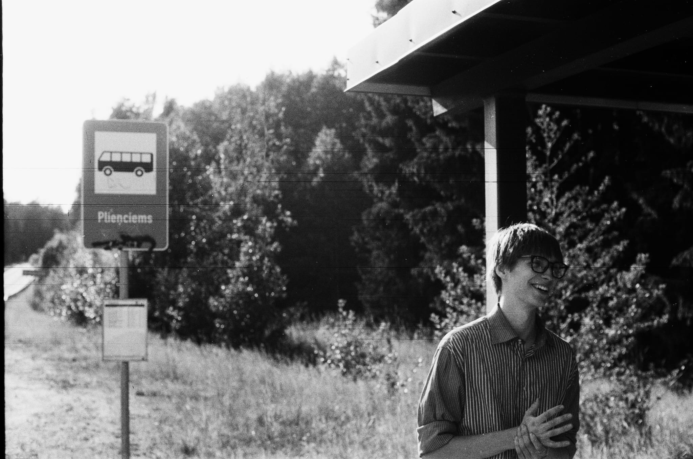
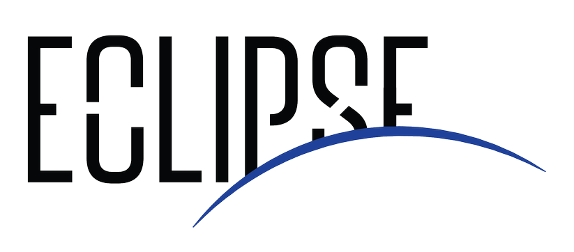
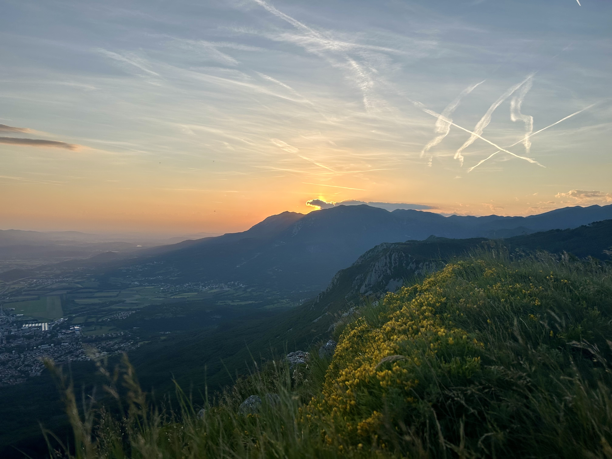
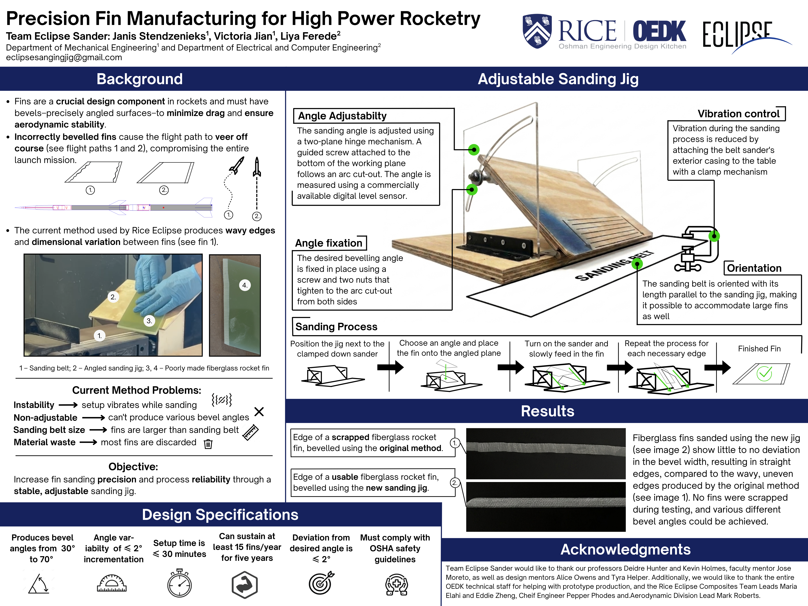
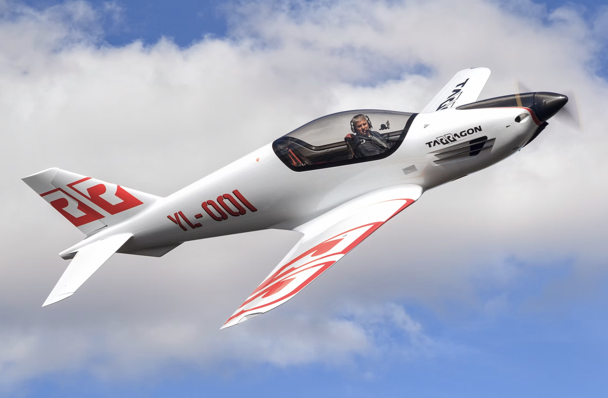
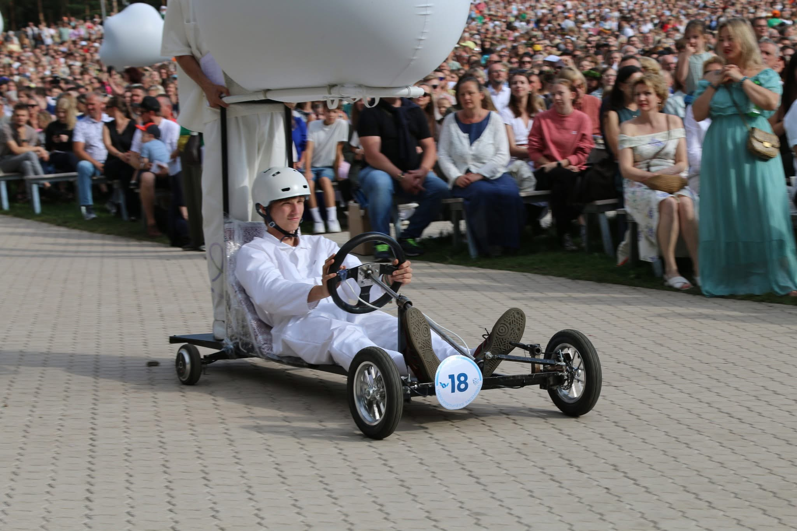
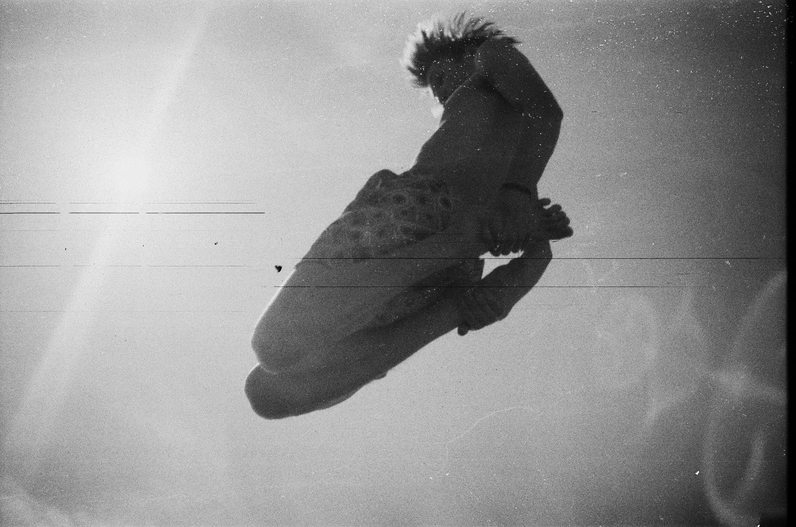

×
‹
›

Mechanical Engineering at Rice University

Autonomous Underwater Systems

During my time at TimTec, I worked within the rapid prototyping team on an AUV project, primarily researching optimized PID controller solutions for control surfaces and vector thrusters using ArduSub and ArduPlane, later integrated into the working prototype. I wrote technical reports and developed input/output schematics for embedded control systems and user interfaces, documenting the proposed solutions and their integration. I also participated in and ran multiple prototype field tests evaluating the magnetometer and GPS systems, overall maneuverability, and user experience.
Due to the nature of this work, I cannot share any photos or produced material, so here is a picture I took hiking in the Slovenian Alps instead.
Adjustable sanding jig for consistent rocket fin manufacturing

As part of an Engineering Design class, I led a team of 3 students to design and build an adjustable sanding jig for Rice Eclipse, improving rocket fin bevel accuracy and consistency across fin sets.
This project included every single part of the engineering design process, from root-cause analysis to design and assembly of the final prototype. I worked across all aspects of this project: CAD design, manufacturing (laser cutting, 3D printing, part machining, woodworking), and technical report writing and presentation. Our final product can consistently produce desired bevel angles and reduced scrapped fin material waste by almost 90%.
Design, simulations and manufacturing - collegiate-level rockets
I designed rockets and simulated their flight performance based on launch/weather conditions using OpenRocket and RasAero. Specifically, I worked on Prestige V3 and Aurora + Helios launch vehicles (Mach 2+ dual-stage rockets).
Under this subteam, I also made rocket fins and did a few smaller projects that were necessary for Rice Eclipse at that time. As an example, I designed a mounting solution for ground control transmission antennas. The manufacturing aspect of this work included water jet machining, laser cutting, Fusion 360 CAD and 3D printing.
Full rocket body development - collegiate-level rockets
Developed the full aerodynamic body for Prestige V3 and Aurora + Helios rockets. This included body tube and transition manufacturing, fin manufacturing and bevelling, bodytube sanding, composite layup and tip-to-tip structural reinforcement using carbon fiber and epoxy resin.
Speed record-breaking High-Power Ultralight Aircraft

At Tarragon, I got to do a lot of hands on manufacturing. I worked on 3 different customer aircraft (similar to the one in the picture) by sanding and surface finishing ultralight carbon composite parts (air intakes, bulkheads, ailerons, fuselage, fuel tanks), as well as bonding those parts with aircraft epoxy resin for fuselage assembly. Additionally, I got to machine load-transfer components for landing gear mechanisms - carbon tubes and joints.
Latest iteration with quick attachment/detachment function
First prototype iteration
Scientific research at RTU Faculty of Natural Sciences and Technology
Challenging the Utilitarian Test for Moral Status
This is a philosophical analysis essay challenging the Argument from Marginal Cases - a widely discussed perspective in moral philosophy. I just find it very interesting, so here's my take on it.
Led a team of students to design and manufacture 4 energy-efficient electric tricycles from recycled materials

George R. Brown School of Engineering and Computing | Rice University
